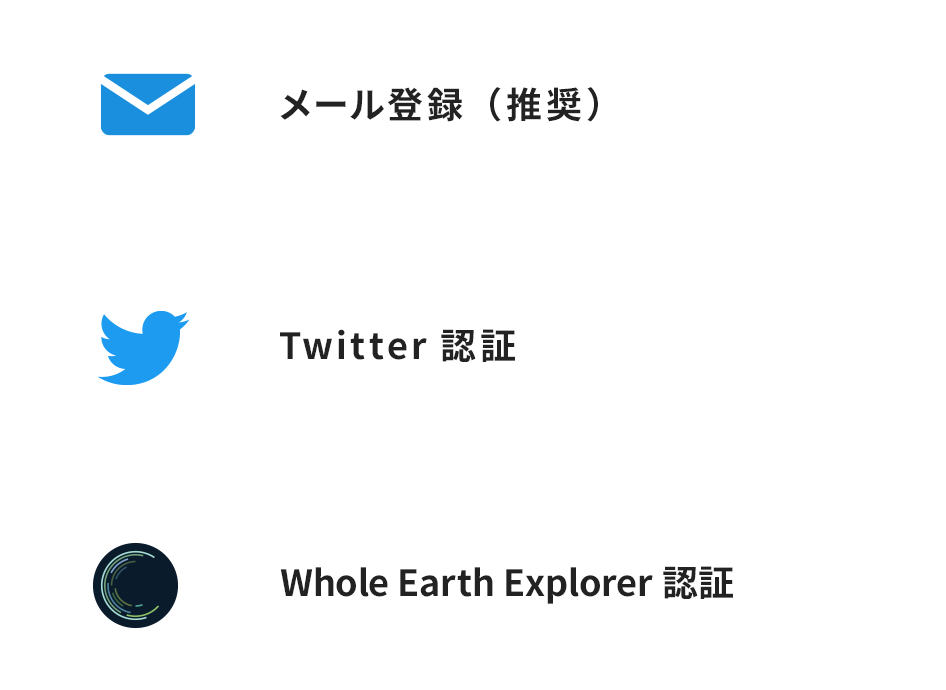

ABOUT 鉄とコンクリートの守り人とは
「鉄とコンクリートの守り人」とは、日本にあるすべてのマンホール蓋を守り人（プレイヤー）が力をあわせて撮影・投稿などをし、街のインフラ危機を守るゲームです。
ゲームをプレイすることでWEK（Whole Earth Koban）を獲得し、実際の商品券などに交換することができるため、守り人は稼ぎながら楽しく社会貢献できます。
さあ、力をあわせて日本全国のマンホール地図を完成させましょう。
HOW TO PLAY
「鉄とコンクリートの守り人」
の遊び方
※ゲーム画面は、バージョンアップにより変更される場合がございます
マンホールをたくさん撮影・投稿しながら、マイニング犬を育てていきましょう。
マイニング犬を育てると実際の商品券などに変えられるWEK（Whole Earth Koban）がたくさんGETできます。
ゲームを楽しみながら社会貢献して、稼ぎましょう！
-
アカウントを作成しサインインしよう！
アカウント作成は以下の３つのお好きな認証方法で

ご登録いただけます。 -
遊び方を覚えよう！
-
明るい時間にプレイ遊び方その１マンホール撮影・投稿をして街を救おう！マンホール撮影・投稿するために、外へマンホールを探す旅に出ます。
まだゲーム地図上に載っていないマンホールや、
地図上にあるまだ撮影されていないマンホールを見つけて、撮影・投稿をします。 -
遊び方その2マイニング犬を飼って育てよう！
マンホールを撮影・投稿して、他のプレイヤーによるレビューが完了すると、マンホールがプレゼント箱に変わります。
プレゼント箱を開けると、マイニング犬やフード、アイテムなどがランダムに出現します。マイニング犬をGETしたら、フードをあげたり、アイテムを付けたりしてあげてお世話をしましょう。フードを食べてお腹が満たされているときには、マイニング犬はWEK（Whole Earth Koban）やアイテムなど色々なものを拾ってきます！（=マイニング） -
いつでもどこでもプレイ可能遊び方その3投稿マンホールのレビューをみんなで協力しよう！写真撮影投稿されたマンホールの評価を行います。
レビューページから、投稿されたマンホール蓋のひびやさびなどの状態を確認します。
レビューすることで報酬がもらえます。
-
-
たくさんプレイすることによって楽しめ、街を救うことができます。
マイニング犬が拾ってきたWEK（Whole Earth Koban）は、実際の商品券などに交換できます。※1,2,3,4
皆さんは「エッセンシャル・ゲーマー」として、ゲームを楽しみながら社会貢献することができます！※1 商品券への交換機能については現在準備中となります。
※2「鉄とコンクリートの守り人」の運営主体であるWhole Earth Foundationが発行する仮想通貨「Whole Earth Coin (WEC)」が、日本の仮想通貨取引所に上場した場合には、ゲーム内のWEK（Whole Earth Koban）をWECに交換できるような機能を実装することを予定しています。
※3 2022年半ばに日本の暗号資産取引所にWECを上場できるよう、現在準備を進めております。
※4 WECは複数の海外の仮想通貨取引所へ上場済みです。参考：CoinGeckoにおけるWECの価格推移
とても大切な注意事項
安心、安全に楽しく
プレイしてもらうために、
下記のことを必ずお守りください。
-
車通りの多い道路上にあるマンホール蓋の撮影は危険ですので、絶対に行わないでください。
-
歩きながらスマホを使うのは危険です。マンホールの位置は都度止まってから確認してください。
-
待っている方がいたら、感謝の気持ちを伝えてください。
-
写真を撮るときは、周囲の人々の迷惑にならないように注意してください。
COMIC 漫画で遊び方をチェック
「鉄とコンクリートの守り人」が
漫画になりました！
漫画で楽しく遊び方を覚えてください。
NEW FEATURE 新機能について
2022年1月4日のアップデートにより、
新機能「マイニング犬の育成機能」がリリース！
マイニング犬の育成機能
マイニング犬にフードを与えてお腹を満たしてあげると、マイニング犬は気が向いたときに色々なものを拾ってきます！フードやアイテムの他に、集めると商品券に交換できるWEK（Whole Earth Koban）を拾ってくることもあります！何度もマイニングをしたり、アイテムを与えたりすることで、マイニング犬のマイニング能力はアップしていきます！
-
マンホールを撮影してマイニング犬やアイテムを手に入れよう
-
マイニング犬を育ててマイニングをしよう
マイニング犬にフードをあげてお世話をするとマイニングをしてくれて、WEK（Whole Earth Koban）やフード、アイテムなどをランダムに拾ってきてくれます。
-
マイニング犬について
- マイニング犬の見た目は、生まれながらに１匹１匹すべて違います。名前を付けて可愛がってあげてください。
- マイニングの能力も１匹１匹違います。中には1回でたくさんのWEK（Whole Earth Koban）を拾ってくる犬も！？マイニングを繰り返すと、成長してレベルアップしていきます！
- マイニング犬を飼うには犬小屋が必要になります。最初から2つ持っていますが、WEK（Whole Earth Koban）等を使ってショップで購入することでさらに増やすことができます。
-
フードについて
- マイニング犬は、見つけたときはお腹がすいていますので、フードをあげましょう。
- すると、マイニングをするようになりますが、一生懸命マイニングをするとお腹がすいてしまいます。定期的にフードをあげてお世話してあげてください。
- フードはプレゼント箱やマイニングのほか、WEK（Whole Earth Koban）等を使ってショップで購入することもできます。
-
アイテムについて
- アイテムを付けてあげることで、マイニング犬のマイニング能力を一時的にアップすることができます。
- アイテムはプレゼント箱やマイニングのほか、WEK（Whole Earth Koban）等を使ってショップで購入することもできます。
-
-
WEK（Whole Earth Koban）を交換しよう
マイニング犬が拾ってきたWEK（Whole Earth Koban）は、実際の商品券などに交換することができます。※1,2,3,4「エッセンシャルゲーマー」として、ゲームを楽しみ稼ぎながら社会貢献をしよう！
※1 商品券への交換機能については現在準備中となります。
※2「鉄とコンクリートの守り人」の運営主体であるWhole Earth Foundationが発行する仮想通貨「Whole Earth Coin (WEC)」が、日本の仮想通貨取引所に上場した場合には、ゲーム内のWEK（Whole Earth Koban）をWECに交換できるような機能を実装することを予定しています。
※3 2022年半ばに日本の暗号資産取引所にWECを上場できるよう、現在準備を進めております。
※4 WECは複数の海外の仮想通貨取引所へ上場済みです。参考：CoinGeckoにおけるWECの価格推移